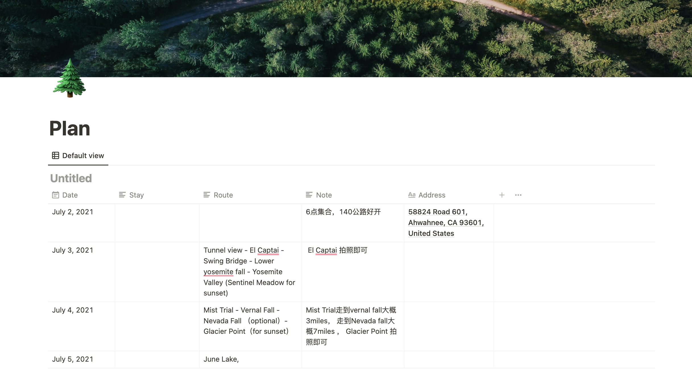

Trip Plan
Highlights
About Yosemite National Park
Yosemite National Park is in California’s Sierra Nevada mountains. It’s famed for its giant, ancient sequoia trees, and for Tunnel View, the iconic vista of towering Bridalveil Fall and the granite cliffs of El Capitan and Half Dome. In Yosemite Village are shops, restaurants, lodging, the Yosemite Museum and the Ansel Adams Gallery, with prints of the photographer’s renowned black-and-white landscapes of the area.
Tunnel View
Tunnel View is wonderful. From early black and white photos to present day post cards, the imagery from this location is nothing short of incredible. Even as roads have been constructed and buildings have been erected in Yosemite Valley, Tunnel View has not changed. With great care, unnatural developments have been hidden from this special viewpoint. From Tunnel View you can imagine that nothing has changed and that nothing will change in this perfect valley.


Yosemite Valley
Yosemite Valley is a glacial valley in Yosemite National Park in the western Sierra Nevada mountains of Central California. The valley is about 7.5 mi (12.1 km) long and 3,000–3,500 ft (910–1,070 m) deep, surrounded by high granite summits such as Half Dome and El Capitan, and densely forested with pines. The valley is drained by the Merced River, and a multitude of streams and waterfalls flow into it, including Tenaya, Illilouette, Yosemite and Bridalveil Creeks. Yosemite Falls is the highest waterfall in North America and is a big attraction especially in the spring, when the water flow is at its peak. The valley is renowned for its natural environment and is regarded as the centerpiece of Yosemite National Park.
Glacier Point
Outside the valley, Glacier Road and Tioga Road provide seasonal access to other areas of the park. Glacier Road allows access to stunning views over the Yosemite Valley. Tioga Road crosses the park in an east-west direction and runs through alpine scenery, where you can find lovely, and often less busy, hiking trails. Due to the altitude, Tioga Road opens later in the spring than Glacier Road.
Glacier Point, an overlook with a commanding view of Yosemite Valley, Half Dome, Yosemite Falls, and Yosemite’s high country. This is also a good starting or finishing point for some of Yosemite’s most popular trails, including the Four Mile Trail and the Panorama Trail. The best time to visit is early spring or fall before the road closes for the season. In the summer, it can be too popular, especially in the middle of the day.
Good times and memories